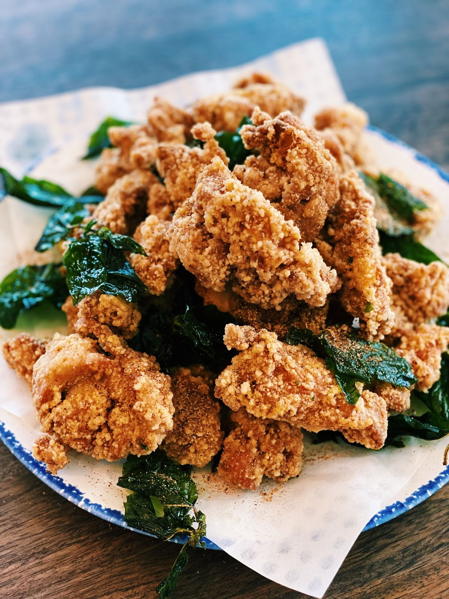

Taiwanese Popcorn Chicken

Discover an authentic Taiwanese Popcorn Chicken recipe that's both easy to make and delicious! Experience the delightful crunchiness on the outside and juicy tenderness on the inside.
Prep Time: 20 mins
Active Time: 20 mins
Total Time: 40 mins
Yield: 4 People
Ingredients
- 6 Pieces of Boneless Chicken Thigh with the skin on. Cut into 1-inch cubes.
- 2.5 Tbsp of Soy Sauce
- 3 Tbsp of Chinese Cooking Wine optional
- 1 tbsp of Minced Garlic
- 1 Tbsp of Five Spice Powder
- 1 Large Egg
- 3.5 Tbsp of Rice Flour
- 1.5 Cup of Thai Basil
- 2 Cup of Tapioca Starch
- Seasoning Mix – chili powder, paprika, five-spice powder, white pepper, garlic powder, and salt
Steps
- Marinate the chicken with soy sauce, Chinese cooking wine (optional), minced garlic, and Five Spice Powder for 20 minutes.
- After 20 minutes, add in 3.5 tbsp of rice flour and one egg and mix. You want a wet batter consistency.
- Coat the chicken with Tapioca Starch and let it sit for 5-7 minutes to prevent the coating from falling off.
- In a pan, add in oil and turn the heat to medium-high. Once the oil is hot, add in the Thai Basil and fry it for 30 seconds – 1 minute or crispy. This will help with fragrant oil.
- Next, add the chicken and fry the chicken for 4-5 minutes or until golden brown.
- Optional, but highly recommend, turn the heat to high and double fry the chicken for 1 minute and the basil for 30 seconds.
- Sprinkle on the seasoning mix and ENJOY!!
Recipe origin：Taiwanese Popcorn Chicken